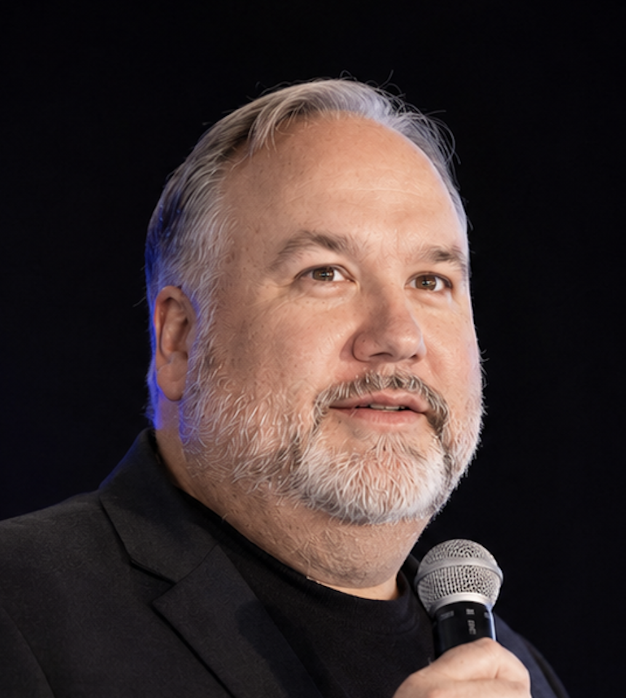

Boundary
↗Stake your scope.
AI-powered security tools enable discovery, but you must define the problem space. Otherwise, you can rapidly end up searching an endless field of assets that may—or may not—belong in your security zone.
A field note for cybersecurity leaders
AI makes organizations more accountable for their decisions.
The reframe
AI’s deeper effect is easy to miss: it puts more decision-making in your hands as a responsible risk executive or cybersecurity practitioner.
Done correctly, it elevates capability, reduces the churn of compliance fire drills, shuts down attacks before they propagate, and rapidly connects defensibility and explainability to evidence.
Getting it wrong means adding another technology that takes up space, burns through budget, and never delivers what was promised.
The leadership agenda
The cybersecurity leader must decide how the organization will change—not simply which tool it will buy.
AI-powered security tools enable discovery, but you must define the problem space. Otherwise, you can rapidly end up searching an endless field of assets that may—or may not—belong in your security zone.
This is where organizational management comes in. It goes beyond “human supervision”: it requires process and tools. Does your organization know how to test for trust—or is it only proficient at saying what is wrong? The implications of getting this wrong are significant.
It is no longer only a matter of the technology you have, but the business you are in. AI can order ambiguity and run alongside legacy processes, but it is justified only by business-defined outcomes—not governance, risk, and compliance alone. Do you know what evidence will justify your choice?
The path forward
AI integration gives you the advantage of managing risk as you make your transition.
Set the AI against your risk, operating model, and accountability.
Shape workflows, roles, and controls around what proves useful.
Retire legacy capabilities deliberately and under control.

About Dan
I’m Dan Schaupner, a workforce transformer focused primarily on cybersecurity—with effects that extend well beyond the security operations center to sustaining business under uncertainty.
I help professionals, learners, and organizations transform with AI. Through speaking and practical artifacts, I help leaders visualize and frame their next step—and get into motion.
Consulting work is currently by invitation only. I keep my eyes open for leaders looking for that last mile: the bridge from uncertainty to what comes next in this simultaneously exciting and turbulent environment.
Begin a dialogueSpeaking and advisory conversations